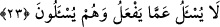

nerede? Çünkü güneş, ışık veren şeylerin en mükemmelidir. Onu yaratan da onun
benzerini yaratamayanlardan çok mükemmeldir. Oysa kendisinden daha mükemmeli
bulunan bir varlık, zâtı îtibâriyle vâcib olamaz. Çünkü zâtı îtibâriyle vâcib olmak, tam
kemâlin hususiyetlerindendir. Biz, başka bir güneş bulamadığımıza göre varlıkta başka
bir ilah olmadığını anlıyoruz.
Nerede görünürse Allah şâhitlik eder
Ki O’ndan başka ilâh yoktur.
Hakikat erbabından birisi şöyle demiştir: “Eğer rûhâniyyet semâsında akıl gibi ve
beşeriyyet arzında hevâ gibi, Allâh’ın peygamberler ve şerîatlar vâsıtasıyla
hidâyetinden başka müdebbirler (idareciler/yöneticiler) olsaydı, onlar kesinlikle
bozulup gitmişti. Tıpkı akıl ve hevânın idâresiyle filozofların, tabîatçıların, dehrîlerin,
ibâhîlerin ve mülhidlerin rûhâniyyet semâsının ve beşeriyyet arzının bozulup gitmesi
gibi. Onların rûhâniyet semâsının bozulup gitmesi, ayaklarının tevhid caddesinden
kayması ve vahdâniyet yolunu yitirmeleri ile olmuştur. Nihâyet bir ve kadîm olan
Allâh’a, kadîm bir ortak isbât ettiler. O ortak, âlemdir. Peygamberlerin dâvetini kabûl
etmediler ve Hakk’ın hidâyetinden nasib almadılar.
Mesnevî’de şöyle der:
Ey Allâh’a aklı hediye götüren,
Akıl, orada yoldaki topraktan da aşağıdır!
Onların beşeriyet arzının fesâdı ise ayaklarının kulluk caddesinden, şerîat ve tâbi
olma yolundan kayması ile olmuştur. Nihâyet hevâ ve şeytan tâğûtuna tapmışlardır.
Durumlarının fesâdı o hale gelmiştir ki Allah onlar hakkında “Onlar sağırlar, dilsizler
ve körlerdir. Bu sebeple düşünmezler.” (el-Bakara, 2/171) buyurmuştur.
Şeyh Ebû Osman Mağribî (k.s.) şöyle der: “Emrini tutmak, yasakladığını terk etmek,
sevdirdiğini sevmek ve yerdiğine buğz etmek şartıyla kim sünneti nefsine emrederse,
onun konuştuğu hikmettir. Kim de nefsine hevâyı emrederse, onun söylediği bid’attır.”
Sâlike gereken, orta yolu tutmaktır. Bu da cennete, Hakk’a yakınlığa (kurbet) ve
vuslata eriştiren Kitâb ve sünnet yoludur. Yine sâlike gereken, sıdk ve ihlâsın kemâlini
tahsile çalışmaktır. Çünkü ihtisas ehlinin azığı odur.
Feyyâz ve Kerîm olan Allah’tan bizi her şeyi kaplayan (umûmî) feyzi ile
şereflendirmesini ve ayaklarımızı doğru yolunda sâbit kılmasını niyâz ederiz.
23. Allah, yaptığından sorumlu tutulamaz; onlar ise sorguya çekileceklerdir.